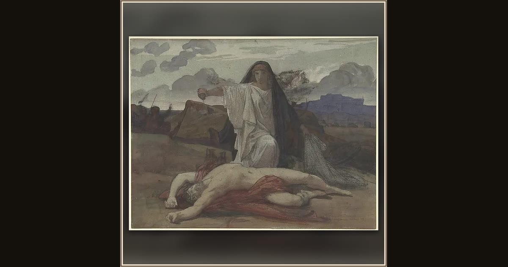

Antigone Gives Token Burial to the Body of Her Brother Polynices
Jules-Eugène Lenepveu · 1835–98 · met
Antigone kneels over her brother's body, pouring from a vessel held high, as the guard describes her crowning the dead with libations (430). Explore its place in Sophocles's Plays, Antigone, line 408.